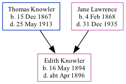

Edith May Knowler 1894 - c1896
[ Home ] | [ Calendar ] | [ Surnames Index ] | [ Family History ]The daughter of Thomas Knowler (an agricultural laborer) and Jane Lawrence, Edith Knowler, the first cousin twice-removed on the mother's side of <a href="I1.html">Nigel Horne</a>, was born in Thanet, Kent, England on May 16, 1894<span class="citation">1,2,3</span> and baptized in St Lawrence, Thanet, Kent, England on Oct 21, 1894. On Oct 21, 1894, she lived Southwood in Thanet<span class="citation">6</span>. <p>She died <i>c.</i> Apr 1896 in Eastry, Kent, England<span class="citation">3,4</span> and was buried at St James's Church, Staple, Kent on Apr 13, 1896<span class="citation">5</span>.
Parents
- Thomas William was born on Dec 15, 1867
- Jane was born on Feb 4, 1868
Citations
- England & Wales births 1837-2006 - Findmypast
- England & Wales, FreeBMD Birth Index, 1837-1915 Online publication - Provo, UT, USA: The Generations Network, Inc., 2006.Original data - General Register Office. England and Wales Civil Registration Indexes. London, England: General Register Office. © Crown copyright. Published by permission of the Cont
- England & Wales, FreeBMD Death Index: 1837-1915 Online publication - Provo, UT, USA: The Generations Network, Inc., 2006.Original data - General Register Office. England and Wales Civil Registration Indexes. London, England: General Register Office. © Crown copyright. Published by permission of the Cont
- England & Wales deaths 1837-2007 - Findmypast
- Kent, Canterbury Archdeaconry Burials - Findmypast
- KFHS CD29
Media
Canterbury Baptisms Transcription - GBPRS-CANT-B-96405993
Canterbury Burials Transcription - GBPRS-CANT-D-95290555
England & Wales deaths 1837-2007 Transcription - BMD-D-1896-2-AZ-000196-336
England & Wales births 1837-2006 Transcription - BMD-B-1894-2-AZ-000333-041
England, Births & Baptisms 1538-1975 Transcription - R_885344116
England, Births & Baptisms 1538-1975 Transcription - R_938186160
Family Tree
Generated by Ged2Site. Last updated on Jul 20, 2025